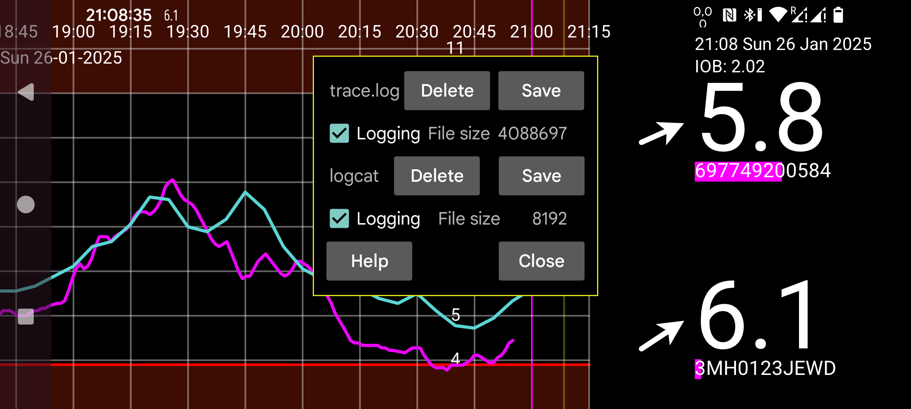

ar de es hi it ja nl pl ru tr uk uz en
Questa è una versione con logging di Juggluco. I file di log possono essere creati in /data/data/tk.glucodata/files/logs
trace.log contiene i messaggi di log che Juggluco stesso crea. logcat.txt contiene i messaggi di log che Android crea in relazione a Juggluco. Puoi eliminarli e salvarli separatamente.
Se riscontri problemi puoi inviare trace.log e logcat.txt a jaapkorthalsaltes@gmail.com oltre a una descrizione dei problemi che hai riscontrato durante il periodo in cui questi file di log sono stati creati.
Dimensione file: dimensione del file di log
Logging: Attiva il logging in trace.log o logcat
Cancella: cancella il file di log
Salva: salva il file di log in un luogo visibile da altre app
Chiudi: chiude questa vista